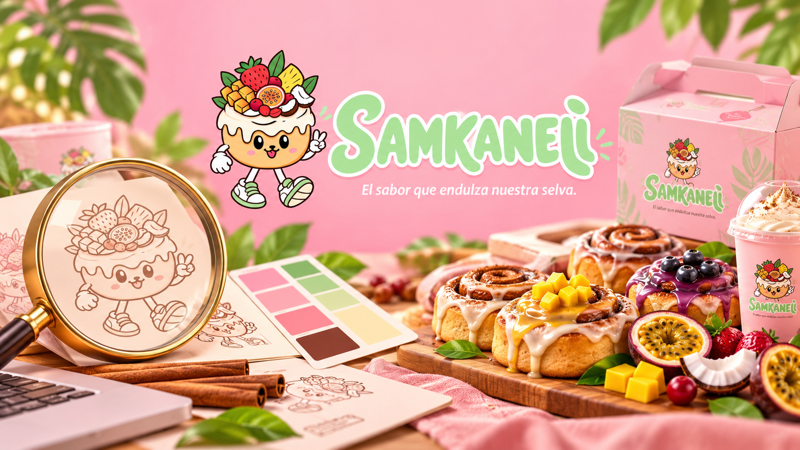
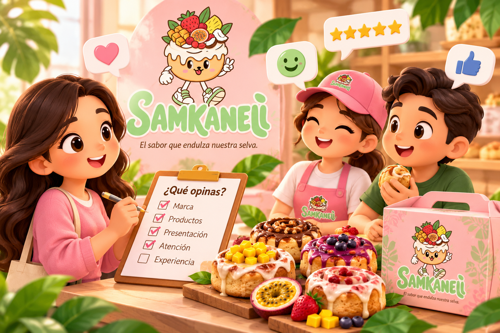
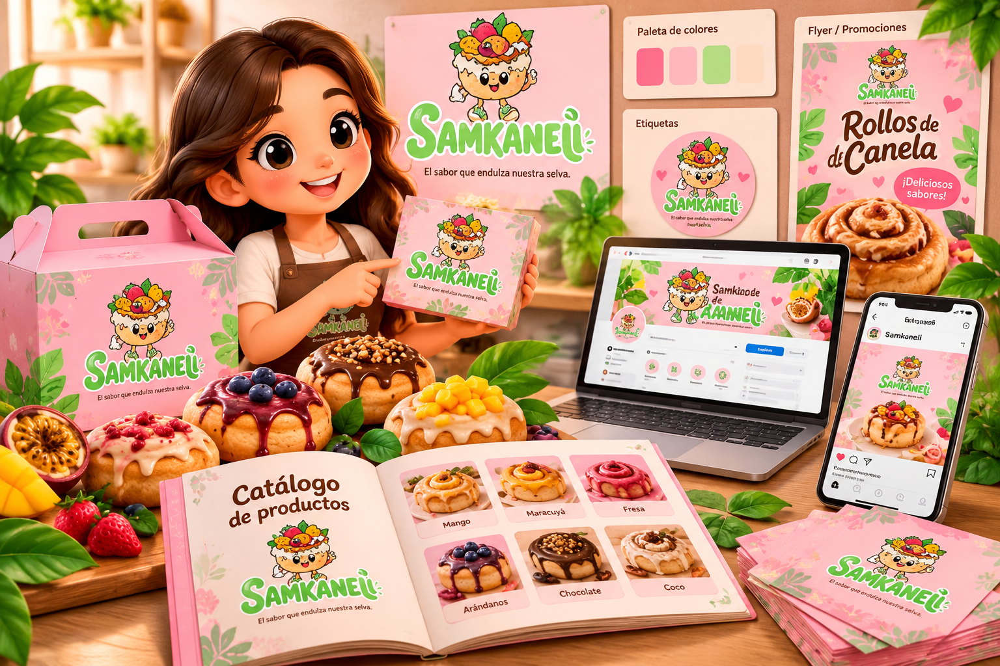
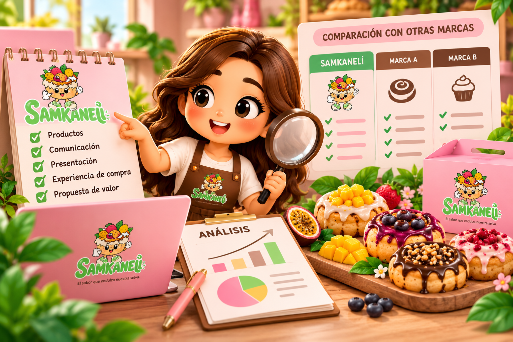
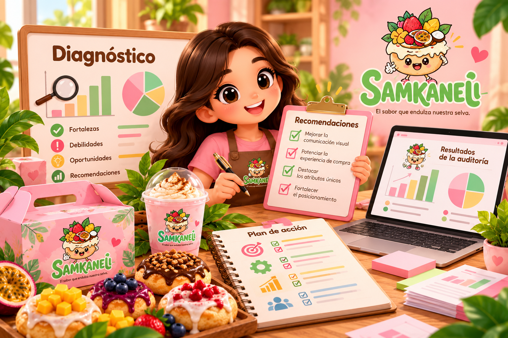
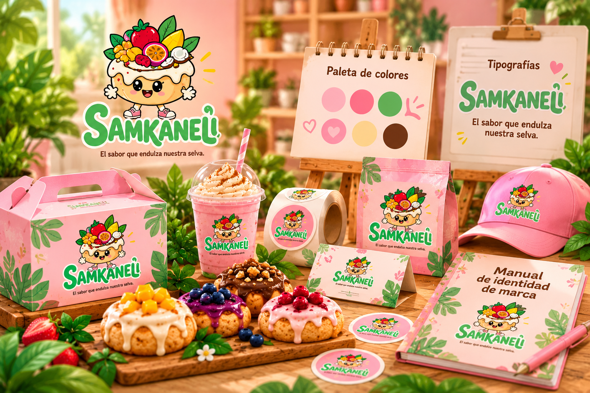
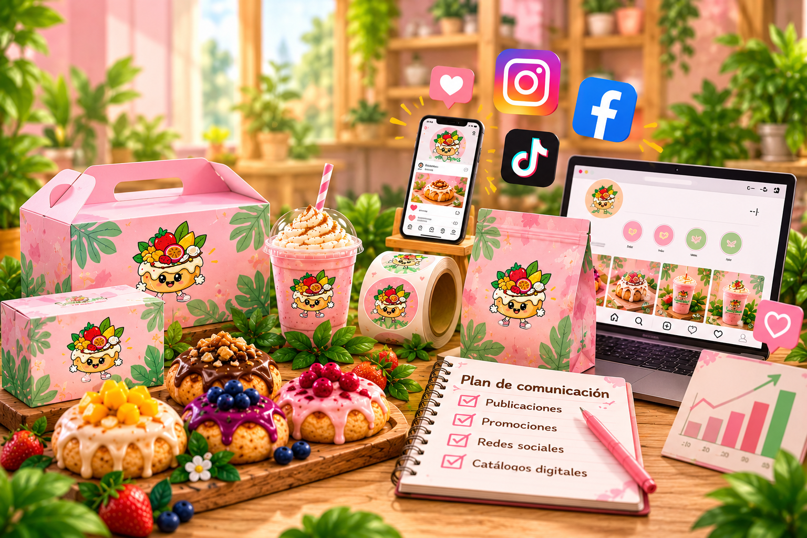
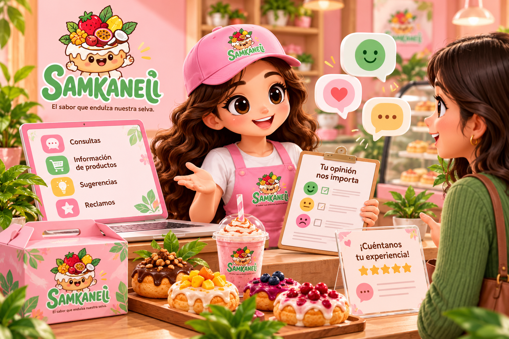
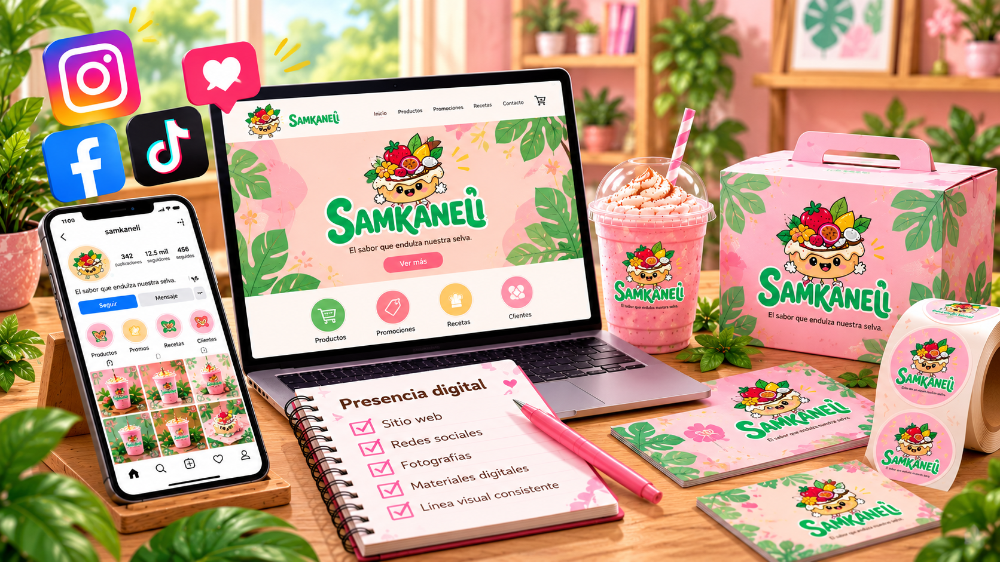

Identidad visual
Revisar el uso del logotipo, los colores, la tipografía, las etiquetas, los empaques y los materiales gráficos de SAMKANELI.
El sabor que endulza nuestra selva.
Esta propuesta busca evaluar cómo se presenta SAMKANELI, cómo la perciben sus clientes y qué oportunidades existen para fortalecer la identidad visual, la comunicación y la experiencia de marca.
Conocer la auditoría01 / NECESIDAD DE LA INVESTIGACIÓN
La auditoría de imagen de SAMKANELI permitirá conocer cómo perciben los clientes la marca, sus productos, presentación y atención. También ayudará a evaluar si su identidad comunica coherentemente sus valores y propuesta de valor.
Además, permitirá identificar qué recuerdan los consumidores, qué esperan y qué podría diferenciar a la empresa. Los aspectos mencionados son propuestas de investigación, no resultados confirmados.
Revisar el uso del logotipo, los colores, la tipografía, las etiquetas, los empaques y los materiales gráficos de SAMKANELI.
Conocer las opiniones de los clientes sobre los productos, la presentación, la atención y la experiencia de compra.
Evaluar si las publicaciones, promociones, catálogos y mensajes transmiten una imagen clara y consistente.
Evaluar la imagen corporativa de SAMKANELI para identificar oportunidades de mejora que permitan fortalecer su identidad, conocer la percepción de los clientes y contribuir a su posicionamiento.
02 / PROCESO DE AUDITORÍA DE LA IMAGEN
El proceso examinará factores internos y externos que pueden influir en la percepción de SAMKANELI. Se propone desarrollar las siguientes etapas:

Identificar qué elementos de SAMKANELI recuerdan los consumidores, cómo reconocen la marca y qué atributos relacionan con sus productos.

Recopilar opiniones mediante encuestas y entrevistas a clientes actuales y potenciales para conocer sus preferencias, expectativas y experiencias con SAMKANELI.

Examinar los productos, empaques, etiquetas, catálogos, fotografías, promociones y publicaciones digitales para determinar cómo contribuyen a comunicar la propuesta de valor de SAMKANELI.

Comparar la presentación de productos, la comunicación, la experiencia de compra y las propuestas de valor de otras marcas relevantes para reconocer oportunidades de diferenciación.

Organizar los datos obtenidos para identificar fortalezas, debilidades y oportunidades, y formular recomendaciones viables que contribuyan a fortalecer el posicionamiento de SAMKANELI.
03 / DESARROLLO DEL PLAN DE INVESTIGACIÓN
El plan ordenará las actividades, los métodos y los recursos necesarios para evaluar la imagen de SAMKANELI. La información reunida permitirá formular recomendaciones ajustadas a la realidad de la empresa.
El problema central consiste en determinar si la imagen que proyecta SAMKANELI es coherente en sus diferentes puntos de contacto y si responde a las expectativas de sus clientes. Para estudiarlo, se necesita conocer el reconocimiento de la marca, la percepción de sus productos, la consistencia de los materiales visuales y la experiencia que acompaña la compra.
¿Cómo perciben los clientes la imagen corporativa de SAMKANELI y qué mejoras podrían fortalecer su identidad, comunicación y diferenciación?
Se propone un enfoque mixto que combine datos cuantitativos y cualitativos:
Recopilar valoraciones sobre reconocimiento, presentación visual, claridad de la información y experiencia de compra.
Pregunta sugerida: «En una escala del 1 al 5, ¿cómo calificaría la imagen visual de SAMKANELI?».
Conocer opiniones, recuerdos y sugerencias con respuestas abiertas.
Pregunta sugerida: «¿Qué cambiaría para mejorar la presentación o comunicación de SAMKANELI?».
Examinar etiquetas, empaques, materiales promocionales, presentación de productos y facilidad para reconocer la marca.
Aspecto por observar: si el logotipo y la información del producto se distinguen con claridad.
Revisar la calidad de las fotografías, la regularidad de las publicaciones, la claridad de los mensajes y la uniformidad de colores y tipografías.
Aspecto por observar: si las piezas digitales mantienen una línea visual reconocible.
ENTREVISTAS / 5 PARTICIPANTES
Se entrevistó a cinco personas para conocer sus opiniones sobre la imagen de SAMKANELI, sus rollos de canela, los empaques y la comunicación de la marca. Cada participante respondió las mismas cinco preguntas abiertas.
Identificar qué recuerda el público de SAMKANELI, cómo percibe sus elementos visuales y qué recomendaciones ofrece para mejorar la presentación y comunicación de la marca.
Rollos de canela suaves y recién hechos. Me recuerdan al aroma de la cocina de mi abuela.
Me suena a algo dulce y diferente. El nombre es raro, pero se queda en la cabeza.
Pienso en postres artesanales con un toque de la selva, hechos con cariño.
Lo primero que recuerdo es el color rosado de las publicaciones y los rollos con glaseado.
Un regalo dulce para compartir en familia o llevar a una reunión.
El rosa y el crema se ven alegres y combinan con el producto. El logotipo se lee bien.
El nombre es original, aunque al principio no sabía cómo pronunciarlo. Los colores llaman la atención.
Me gustan los colores suaves y dulces. Haría el logotipo un poco más grande en los empaques.
Se ve juvenil y simpático, sobre todo con la mascota. En redes se reconoce rápido.
Transmite calidez. El logotipo podría destacar más en la caja para reconocerlo al instante.
Se ven apetitosos y bien cuidados. El empaque protege los rollos y se siente de calidad.
Me parece bonito, pero me gustaría ver los ingredientes y el peso con más claridad.
Es atractivo para regalar. Quisiera que fuera más fácil de abrir y de guardar.
En fotos lucen muy bien. En persona esperaría una etiqueta que repita el diseño de las redes.
Es práctico para llevar. Agregaría una tarjeta pequeña con un mensaje para obsequiar.
Sí, porque la canela y lo dulce recuerdan a lo cálido y natural de la selva.
En parte. Entiendo lo dulce, pero la conexión con la selva casi no se nota en el diseño.
Sí, suena a algo de nuestra región. Podría reflejarse más con hojas o frutas amazónicas.
Me gusta, es fácil de recordar. Debería aparecer siempre junto al logotipo.
Sí, da idea de un producto local hecho con cariño. Lo reforzaría con sabores regionales.
Publicar con más frecuencia y mostrar cómo se preparan los rollos.
Hacer promociones por temporada y sorteos para que más gente conozca la marca.
Crear sabores nuevos con frutas de la región y presentarlos en las redes.
Mantener los mismos colores y estilo de fotos en todas las publicaciones, y responder rápido los mensajes.
Ofrecer cajas para regalo y combos para fechas especiales, con precios claros.
La población de interés estará formada por clientes actuales y potenciales de SAMKANELI. La muestra se seleccionará de acuerdo con el tiempo, los recursos y el acceso a los participantes. Como propuesta académica inicial, se podría encuestar a 30 personas; esta cifra es ilustrativa y no garantiza que los resultados representen a todos los consumidores. El número final deberá definirse antes de aplicar el instrumento.

Definir objetivos, preparar instrumentos y organizar los recursos.
Aplicar encuestas, realizar entrevistas y observar materiales de marca.
Ordenar la información, identificar patrones y redactar el diagnóstico.
Preparar el informe y priorizar acciones de mejora.
El cronograma es una propuesta de trabajo y puede ajustarse según la disponibilidad de participantes y recursos.
04 / PROCESO DE AUTOANÁLISIS DE LA IMAGEN
El autoanálisis consiste en revisar críticamente cómo SAMKANELI presenta su marca, qué recursos utiliza y qué aspectos necesita evaluar. Se diferencia de la auditoría general porque se centra inicialmente en la revisión interna, aunque luego debe contrastarse con las opiniones del público.

Revisar el uso del logotipo, la paleta de colores, las tipografías, la mascota, el eslogan, las etiquetas y los empaques para comprobar si mantienen una identidad común.

Evaluar si los mensajes publicitarios explican con claridad la propuesta de SAMKANELI y si el tono y el diseño son consistentes entre publicaciones, catálogos y promociones.

Proponer la revisión de la forma en que se responden consultas, se informa sobre los productos y se atienden sugerencias o reclamos. Estos aspectos deberán comprobarse con observación y opiniones de clientes.

Revisar si los perfiles y materiales digitales presentan información clara y actualizada, fotografías adecuadas y una línea visual reconocible.
Reconocer los recursos de SAMKANELI y los aspectos que conviene evaluar.
Aspectos que podrían favorecer a la marca.
Puntos que necesitan comprobación.
Nota: estos puntos son hipótesis de revisión y deberán contrastarse con información real.
Identificar factores del entorno que pueden influir en el posicionamiento de SAMKANELI.

Posibles caminos para fortalecer la marca.

Factores externos que conviene monitorear.
Acciones para fortalecer la comunicación, la presentación y el posicionamiento de SAMKANELI.
Establecer criterios claros para aplicar el logotipo, los colores y las tipografías en los materiales.
Revisar la legibilidad y consistencia de las etiquetas, los empaques y los catálogos de SAMKANELI.
Mejorar la calidad y uniformidad de las fotografías de los rollos de canela y sus presentaciones.
Crear un calendario de contenidos con mensajes claros y coherentes para las redes sociales.
Definir un procedimiento para responder consultas y recoger opiniones y sugerencias.
Revisar periódicamente las mejoras y comparar los resultados con la información inicial de la auditoría.
La auditoría de imagen de SAMKANELI permitirá analizar cómo se presenta la marca y cómo la perciben sus clientes. Se revisarán la identidad visual, la comunicación, los materiales de marca y la experiencia de compra para identificar fortalezas y oportunidades de mejora.
La investigación recopilará información mediante encuestas, entrevistas, observación y revisión de los canales digitales. Además, el autoanálisis permitirá evaluar las prácticas internas y contrastarlas con las opiniones de los clientes.
Finalmente, se propondrán mejoras basadas en los resultados obtenidos para fortalecer una imagen coherente, reconocible y diferenciada, vinculada con los sabores de la Selva Central.
Aplicar los instrumentos de investigación, analizar las respuestas y completar el diagnóstico con evidencia real.

Una identidad dulce, cercana y memorable.